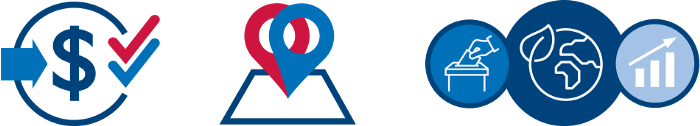
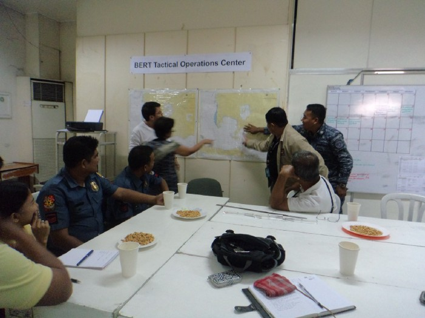
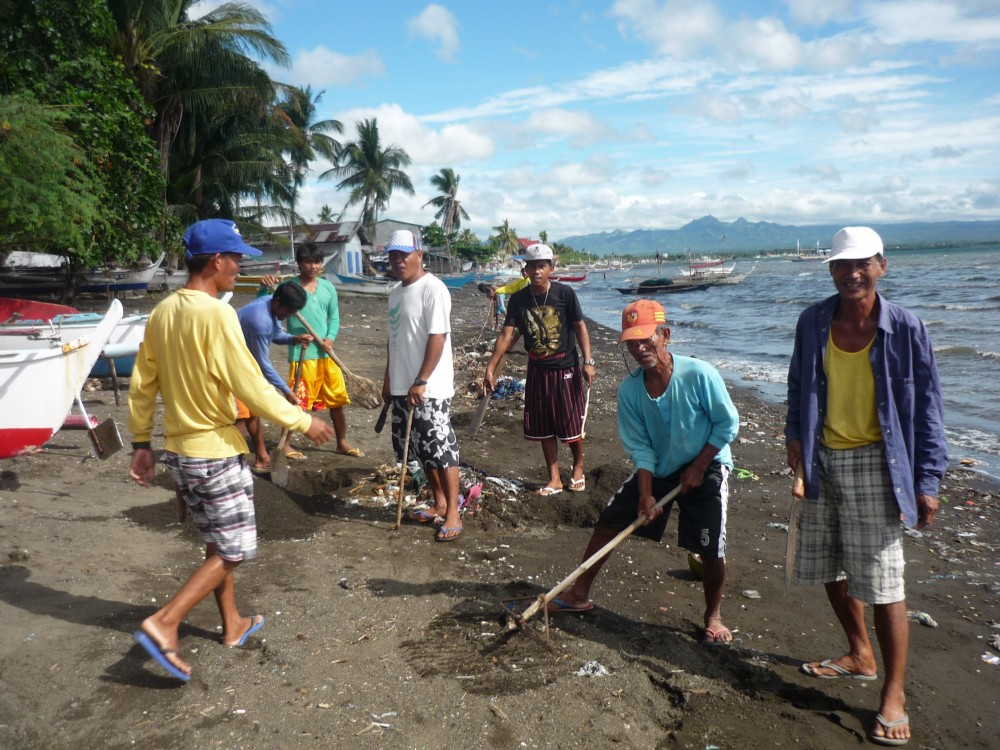
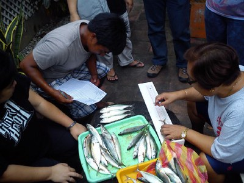
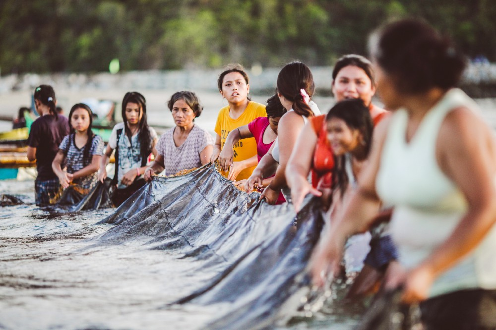

Turning to Science to Build Consensus: The Seasonal Fishing Closure in Balayan Bay, Philippines

Funding Approach: Single Funded with Co-benefits. Geographic Approach: Co-located. Sectors Integrated: Democracy, Human Rights, and Governance; Biodiversity; and Economic Growth.
The Verde Island Passage is considered the “center of the center” of the world’s shorefish biodiversity. Fish yield in the Passage is up to six times higher per similar area than the catch in other fishing grounds in the Philippines. As part of the passage, Balayan Bay used to be described with similar abundance. However, since the early 2000s, data show that the area’s sardine, anchovy, and round scads fisheries are declining as a result of overfishing.
This story describes how USAID’s Ecosystems Improved for Sustainable Fisheries (ECOFISH) activity, implemented by Tetra Tech, developed and implemented the first local government-led seasonal fishing closure in the Philippines, including a cash-for-work program for displaced fishers. To measure the closure’s impact, ECOFISH established a monitoring program that demonstrated the activity’s ecological and socioeconomic benefits.
Investing in Clear Science
In 2014, the decline in catch had become so pervasive in Balayan Bay that several commercial fishers were willing to temporarily stop fishing to allow the fish populations to regenerate. The local government units welcomed the idea, but they did not know how to develop the process and enforce a closed fishing area at a specific time of the year, for a specific length of time, while also providing for people who would lose their livelihoods as a result. ECOFISH therefore initiated a study to inform the decision on a closed season and simultaneously developed a program to build provincial government capacity to collect and analyze data on fish catch, fishing effort, and spawning period of abundant and commonly caught fish species. Using participatory methodologies, the study provided practical knowledge and clear scientific information for stakeholders to develop different scenarios for the closed season.
ECOFISH also incorporated existing fisheries scientific data and research from a predecessor USAID activity, Fisheries Improved for Sustainable Harvest (FISH, 2003–2010). The FISH experience informed the technical approach and helped to ensure that ECOFISH did not “reinvent the wheel” and instead built on and advanced USAID’s previous experience in the fisheries sector.
Building Consensus and Developing a Socioeconomic, Scientific Approach

ECOFISH engaged stakeholders in the decision to “rest the bay” by establishing a technical working group led by the provincial government. The working group included representatives from the local governments, national government agencies, commercial fishing industry groups, and small-scale fishing associations. The provincial government then led consensus-building discussions among fishers, fishing industry players, and policy-makers to identify options that would achieve ecological goals and minimize potential economic impacts of a seasonal closure on the poor and resource-dependent small-scale fishers. The group met every two to three months for nearly a year and then weekly right before and during the closure period. Stakeholders agreed a seasonal closure could provide overfished species the time needed to reproduce and also ensure their resilience to climate variability and other disturbances.
Although the commercial boat owners could manage the temporary income loss, the 3,000 fishing boat crew members needed economic support. To address these immediate economic needs, ECOFISH and the technical working group worked with the national government and the private sector to get the national government’s approval to enroll the fishers in the government’s cash-for-work program. This approach helped ensure fishers’ continued livelihoods and food security.
Agreeing on a “Rest the Bay” Strategy
The stakeholders embraced a common vision that Balayan Bay needed to “rest” and selected one of ECOFISH’s recommended scenarios for the timing and duration of the closed season. They agreed to close the bay to all ring nets, purse seines, and bag nets for 20 days beginning on December 11, 2014. They called the closed fishing season Pagpapahinga, the Tagalog term for rest.
Implementing and Enforcing the Closed Season
Implementing the closed season required addressing economic losses for fishers, raising awareness of the importance of the closed season, and ensuring enforcement. During the closure, the affected fishers worked on coastal cleanup projects in exchange for a wage that was comparable to their lost fishing income.

ECOFISH developed and implemented a communications plan on the closure. The municipalities issued local ordinances and launched public information campaigns to inform fishers about both the closed season and cash-for-work program. During the closure’s first year, the technical working group reported that the general public had increased awareness of the need to conserve the species protected through the closure. Finally, ECOFISH built the capacity of local government units to apply an ecosystem approach to fisheries management (EAFM). The Bureau of Fisheries and Aquatic Resources, supported by the Philippines’ Coast Guard and Maritime Police, monitored the closure in coordination with the technical working group. This coordination strengthened inter-agency collaboration and increased institutional capacities for fisheries management and fishery law enforcement.
Measuring the Benefits of an Integrated Approach
ECOFISH monitored biophysical, socioeconomic, and governance conditions at the start, middle, and end of the activity. The baseline and subsequent monitoring data served as reference points to monitor and evaluate interventions and also as inputs to planning and implementing fisheries management initiatives. ECOFISH also shared these data with stakeholders and resource users in fisheries management. To monitor biodiversity, ECOFISH collected fisheries catch data and reef fish biomass. To measure socioeconomic changes, the team measured variables that would indicate better or new employment at the household and community levels, including household incomes, household expenditures, resource uses, environmental perceptions, and employment. Finally, ECOFISH collected data on the capacity of local governments to implement EAFM and measured improvement in law enforcement capabilities, using an EAFM governance benchmarking tool.
The EAFM governance benchmarking tool measures the local government units’ capacity to implement EAFM, using a self-assessment. To achieve EAFM governance, local government units must collaborate to achieve fisheries management at the ecosystem scale, ensuring implementation of the EAFM plan, marine spatial plan, harmonized regulations, collaborative enforcement, and constituency involvement in ecosystem-wide strategies. There are 15 benchmarks: Level 1 (local government initiates EAFM); Level 2 (local government sustains EAFM); and Level 3 (local governments expand EAFM at the ecosystem scale). Local government units are increasingly using the benchmarking tool to compare their fisheries management performance, which has further encouraged them to improve.
USAID has continued to adapt and improve this tool for use beyond the Philippines; it was originally developed by FISH and later adopted by the Coral Triangle Initiative, the USAID Oceans and Fisheries Partnership, and the USAID Sustainable Ecosystems Advanced activity in Indonesia. Fish Right, the follow-on activity to ECOFISH, is now further developing the tool, including by bolstering its socioeconomic indicators. In addition, the Philippines’s Bureau of Fisheries is considering adopting the tool as part of its award criteria for a local government assistance package.
After the first pilot closed season, ECOFISH convened the technical working group and other stakeholders to share results, which showed the closure’s effectiveness in fish stock recovery. In response, stakeholders agreed to institute a local ordinance that extended the closed season for a 20-day period annually until 2020.

Demonstrating Benefits Across Sectors, Ensuring Sustainability, and Scaling Up
ECOFISH showed that implementing EAFM can lead to ecological and human benefits and strengthened fisheries management action. The Balayan Bay closure resulted in increases in juvenile fish stocks, reef fish biomass, and catch rates, and the 3,000 fishers experienced very minimal livelihood impact. The activity’s socioeconomic indicators demonstrated an overall improvement in the number of people gaining employment or better employment. In summary, the integrated and collaborative approach taken during the Balayan Bay experience resulted in an approach that kept marine ecosystems robust and functional, ensured the sustainability and resilience of the fisheries and their stock over the long-term, and balanced economic and social needs.
Although ECOFISH closed in 2017, the government continues to champion the seasonal closure every year, sustaining ECOFISH’s initial efforts and impact. The local government has built a task force to ensure implementation of the closure period. They collect data on an annual basis, which allows them to adapt their actions to continue improving for future closures. This information is also used to inform the scalability of these efforts in other bays and regions. Balayan Bay remains the first local government-led seasonal closure that is still implemented and led at the local level. The initiative is now scaled up by the Province of Batangas to cover two other bays in addition to Balayan Bay.
Lessons Learned
Invest in clear, verifiable science to develop consensus-based solutions to overfishing.
Investing in understanding the temperature, currents, and stocks in an area can support a common understanding of overfishing. Using this evidence can convince medium-scale commercial fishers, small-scale fishers, local government units, the private sector, and other key stakeholders of the importance of a closed season. Investing in the science can result in knowledgeable conversations among stakeholders and contribute to consensus building and support mainstreaming the use of science for decision-making, especially at the local government level.
Encourage communication and dissemination within the team.
Disseminating data and information effectively and frequently to key stakeholders and decision-makers can promote knowledge management across stakeholders. Providing continuous reporting of monitoring results to technical groups and other stakeholders can enable evidence-based decision-making and adaptive management.
Build and invest in relationships to achieve ownership.
Collaborating with local governments and other stakeholders will develop trust and support for efforts. The technical working group and local government units also played a crucial role in securing the enforcement bodies to safeguard the area during the closed season. The success of these efforts would not have been possible without the established relationships and strong social capital that the activity had built with the local government, fishery, and community leaders. ECOFISH staff highlighted the importance of trust in enabling collaboration and involving stakeholders from the beginning, which has contributed to the Philippines’ journey to self-reliance. This investment in engaging local government from the start helped transform the local government units into champions for EAFM.
Learn More
Explore more case studies on the USAID Biodiversity Integration Case Competition website.
Learn more about biodiversity integration with other USAID technical sectors on the Biodiversity Conservation Gateway.
For more information on USAID/Philippines’ work on biodiversity conservation and sustainable fisheries management, please visit:
- USAID/Philippines Environment Page
- “Too Many Hooks In the Sea”, Tetra Tech
- USAID’s ECOFISH Project Page
- Managing Coastal Ecosystems in the Philippines
Contact
Rebecca Guieb, Development Specialist, USAID/Philippines